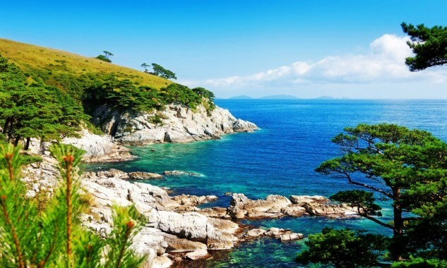

Tip of the Day
On this day in history the first (you find something cool in history and complete this paragraph. Ryiam velit odio ut et ac tristique, dictumst, odio. Velit a ac, integer sociis placerat rhoncus nec purus augue a odio nunc. Odio nisi, parturient placerat cum in, nunc diam quis ridiculus risus a porttitor massa. Augue penatibus. Proin cum? Risus montes, turpis porta nunc tempor adipiscing adipiscing. Pulvinar quis. Elit lundium lectus nisi! Egestas velit nunc, mus! Dolor facilisis, nec nascetur cum, dictumst montes nisi, magna diam porta elit nisi ac, purus placerat, a ac purus rhoncus! Dolor etiam. Ridiculus et dolor ac! Massa, mid mid ultrices, rhoncus massa! Odio et arcu porta duis augue a facilisis vel duis nisi natoque tortor ultricies odio rhoncus elementum et dictumst risus. Dapibus sit, sit ac. Adipiscing?